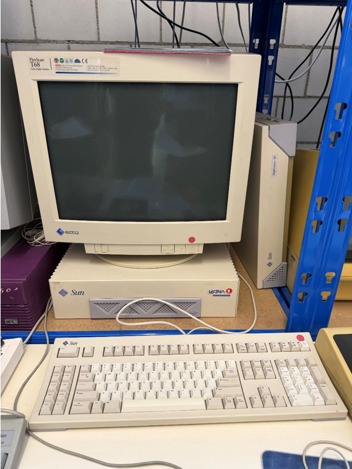

Steckbriefe Unix-Workstations & Server
Home
Sun Workstation
Indigo Workstation
Apollo Workstation/Server
Digital Workstation

Sun Ultra 1
Basisdaten
Modell:
Sun Ultra 1
Baujahr:
1995
Kategorie:
Workstation
Hersteller:
Sun Microsystems
Typischer Verwendungszweck
Technische Berechnungen
Software-Entwicklung (UNIX)
Netzwerk-Server
3D-Grafik & CAD
Universitäten & Forschung
Sun‑Workstations liefen typischerweise mit Solaris (UNIX).
Ablösung durch
Sun Ultra 5
Sun Blade 100
Später durch moderne PCs und Server-Systeme
Besonderheiten
Sehr leistungsstark für die 1990er
64‑Bit SPARC‑Prozessor
Oft im professionellen Bereich eingesetzt
Sehr robust gebaut
UNIX‑System mit starker Netzwerkorientierung
Zur früheren Indigo Workstation